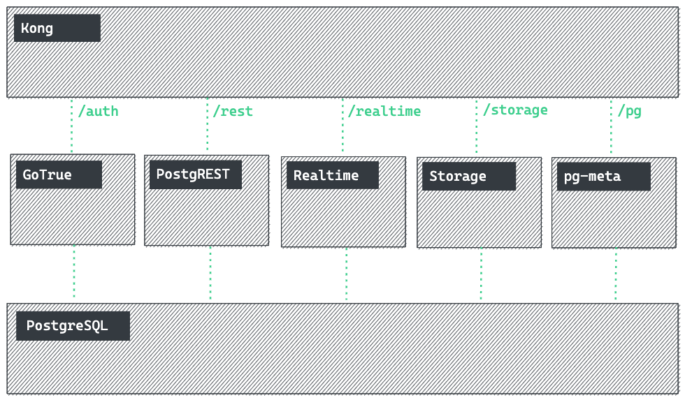

[api.]stadtpuls.com
/behind/the/curtain
Lucas Vogel & Fabian Morón Zirfas
2021-10-20

Fabian Morón Zirfas
- Senior Creative Technologist
- @Ideation & Prototyping Lab
- @Technologiestiftung Berlin
- GitHub: @ff6347
Lucas Vogel
- TODO
T.O.C.
- Tech Stack Übersicht
- Konvention vor Konfiguration
- Dokumentation
- Qualitätssicherung
Online Präsentation
Tech Stack Übersicht

Konvention vor Konfiguration
Große Community
Viele Resourcen
Open Source/Core

Backend as a Service Startup
Supabase is an open source Firebase alternative.

Dokumentation
Typescript
Fastify JSON Schemas
Bsp.: JSON Schema
Bsp.: JSON
Storybook
Qualitätssicherung
Testing
- Unit-testing
- Snapshot-testing
- Integration-testing
Storybook
Code Reviews
Github Actions
Bei jeder PR/Push
Staging Environments
Q & A
Danke
für Ihre Aufmerksamkeit